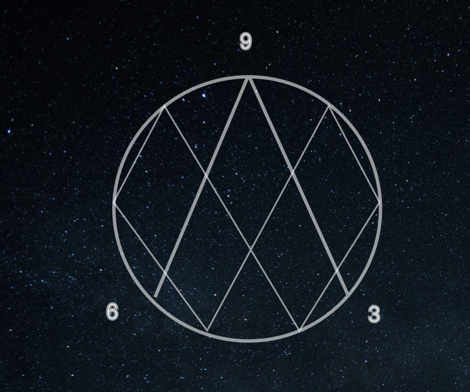

Wat is Vortex Math en Waarom is het Belangrijk?
In deze aflevering leggen wij de basis uit van Vortex Math. We nemen jullie mee door het getallensysteem van 1 tot 9, het terugkerende patroon, en de unieke eigenschappen van 3, 6 en 9. Wij vertellen ook waarom veel mensen geloven dat deze wiskunde de kern van het universum vertegenwoordigt en we kunnen het ook weerleggen om twee perspectieven in kaart te brengen